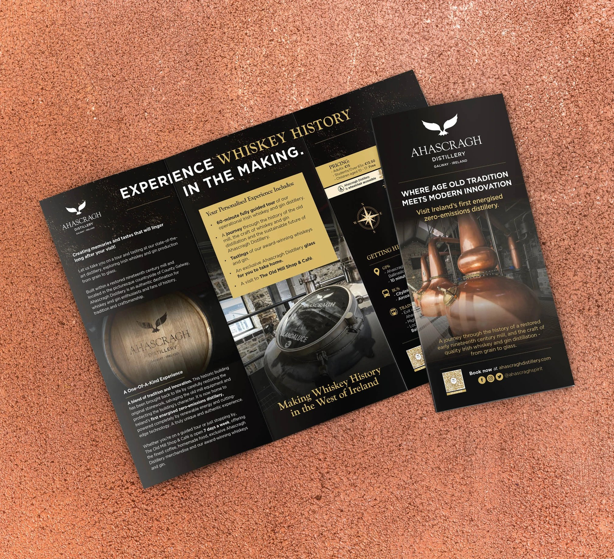
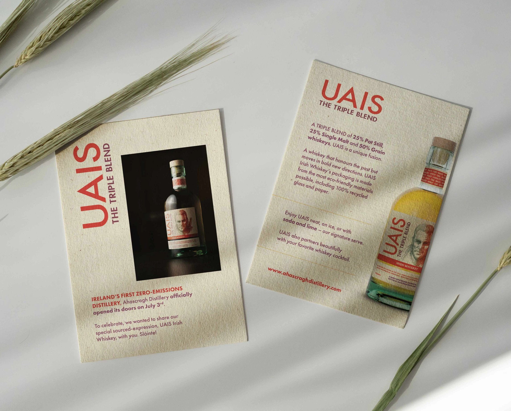
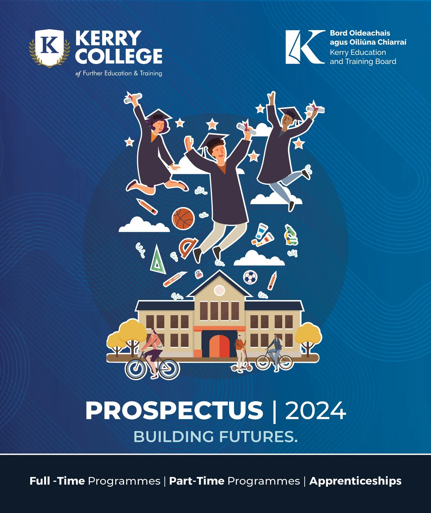
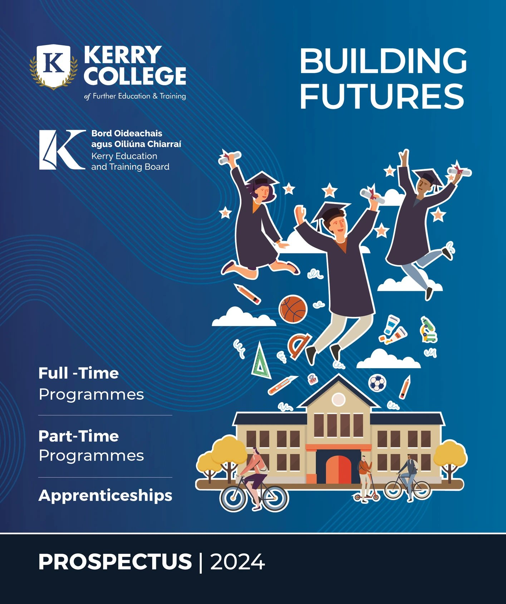

Ahascragh Distillery
Tour Brochure & Recipe Card
Examples of some print work I've designed for Ahascragh Distillery and their whiskey brand, UAIS.


Kerry College
2024 Prospectus Cover Concepts
These concepts weren't chosen but I still really enjoyed making them and I am proud of how they turned out. I wanted to convey a sense of excitement as well as showcase the different types of courses available in the college. I used gradients and a patterned background for visual interest and kept the building as close to the real college as I could.

